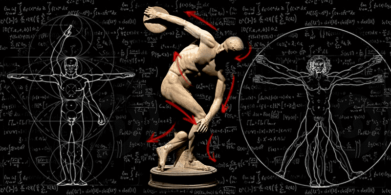

<!DOCTYPE html>
<html>
<head>
  <title>Simple Static Webpage</title>
  <link rel="stylesheet" type="text/css" href="styles.css">
</head>
<body>
  <div id="content">
    <!-- Content will be loaded here -->
  </div>
  <script src="https://cdn.jsdelivr.net/npm/marked/marked.min.js"></script>
  <script>
    const markdownContent = `
[Back to index](./index.html)
# Rotational Dynamics

### *Moment Of Inertia*


The moment of inertia is defined as the product of mass of section and the square of the distance between the reference axis and the centroid of the section.
Spinning figure skaters can reduce their moment of inertia by pulling in their arms, allowing them to spin faster due to conservation of angular momentum.

Video of rotating chair experiment, illustrating moment of inertia. When the spinning professor pulls his arms, his moment of inertia decreases; to conserve angular momentum, his angular velocity increases.
The moment of inertia I is also defined as the ratio of the net angular momentum L of a system to its angular velocity ω around a principal axis of rotation that goes through the origin, that is

<strong>Rotational dynamics board numericals</strong>

<strong>*2 Marks*</strong>

1) A body is tied to one end of a string and revolved in a horizontal circle of radius 50 cm at a constant angular speed of 20 rad/s. Find its (i) linear speed 

2) To simulate the acceleration of large rockets, astronauts are seated in a chamber and revolved in a circle of radius 9.8 m. What angular speed is required to generate a centripetal acceleration 8 times the acceleration due to gravity?

3) What is the tangential acceleration of a flywheel of diameter 60 cm when it slows down uniformly at the rate of 0.25 rad/s²?

4) A flywheel rotating at 15 rps slows down to 5 rps in 50 rotations. Find its angular acceleration.

5) A body of mass 100 g is tied to one end of a string of length 4 m and whirled in a horizontal circle. Find the maximum frequency with which the body can be whirled if the string breaks under a tension of 50 kg wt.

6) An object of mass 1 kg, tied to one end of a string 100 cm long, is whirled in a vertical circle. What is the minimum speed required at the lowest position to complete the circle?

7) A small body tied to a string is revolved in a vertical circle of radius r such that its speed at the top of the circle is √2gr. Find the minimum and maximum kinetic energies of the body.

8) A wheel is rotating at 60 rotations per minute. If 480 J of energy is required to double its rotational speed, calculate the moment of inertia of the wheel.

9) Calculate the moment of inertia of a uniform disc of mass 10 kg and radius 60 cm about an axis perpendicular to its length and passing through its center.

10) The surface density of a uniform disc of radius 10 cm is 2 kg/m². Find its MI about an axis passing through its center and perpendicular to its plane.

11) The radius of gyration of a disc about its transverse symmetry axis is 2 cm. Determine its radius of gyration about a diameter.

12) An automobile engine develops 62.84 kW [of power] while rotating at a speed of 1200 rpm. What torque does it deliver?

13) The angular momentum of a body changes by 80 kg-m²/s when its angular velocity changes from 20 rad/s to 40 rad/s. Find the change in its kinetic energy of rotation.

14) A ring and a disc roll down an inclined plane through the same height. Compare their speeds at the bottom of the plane.

15) A spherical shell and a uniform solid sphere roll down the same inclined plane. Compare their accelerations

16) A solid sphere of mass 1 kg rolls on a table with linear speed 2 m/s . Find its total kinetic energy.

—---------------------------------------------------------------------------------------------------------------------------------------------------------------------------------------------------------------------------------------------------------------------------------------------------------

<strong>*3 Marks*</strong>

1) The angular position of a rotating object is given by 358 0()=(1.55 -7.751+2.87) rad, where t is measured in second. (i) When is the object momentarily at rest? (ii) What is the magnitude of its angular acceleration at that time?

2) A coin is placed on a stationary disc at 1 m from the disc's centre. At time t=0s, the disc begins to rotate with a constant angular acceleration of 2 rad/s² around a fixed vertical axis through its centre and perpendicular to its plane. Find the magnitude of the linear acceleration of the coin at t=1.5 s. Assume the coin does not slip.

3) A wheel, starting from rest, turns through 360 rad with a constant angular acceleration of 5 rad/s². (i) What is its final angular velocity? (ii) How much time did it take to turn through 360 radians?

4) A wheel is set into rotation with uniform angular acceleration. If it attains a frequency of 2 rot/s in 8 seconds, calculate the time taken by it for the last complete rotation.

5) The coefficient of static friction between a coin and a gramophone disc is 0.5. The radius of the disc is 8 cm. Initially, the centre of the coin is л cm away from the centre of the disc. At what minimum frequency will it start slipping from there? By what factor will the answer change if the coin was initially almost at the rim? [Take g=n² m/s²]

6) During a stunt, a cyclist is undertaking horizontal circles inside a cylindrical well of radius 6.05 m. If the friction coefficient is 0.49, what minimum speed should the stunt artist maintain? The mass of the artist is 50 kg. If she/he increases the speed by 20%, how much will the force of friction be?

7) A circular race course track of radius of 500 m is banked tan 0.2. The coefficient of static friction between the tyres of a vehicle and the road surface is 0.25. Determine the speed limits with 10% margin.

8) Part of a racing track is designed to have a radius of curvature of 72 m. If the maximum speed limit for the vehicles is 216 kmph, with what angle should the road be tilted? What height will its outer edge be with respect to the inner edge if the track is 10 m wide? [g=10 m/s²]

9) A string of length 0.5 m carries a bob of mass 0.1 kg at its end. If this is to be used as a conical pendulum of period 0.4π s, calculate the angle of inclination of the string with the vertical and the tension in the string.

10) A pendulum, consisting of a light string of length 20 cm and a bob of mass 100 g, is set up as a conical pendulum. Its bob revolves at 75 rpm. Calculate the kinetic energy and the increase in gravitational potential energy of the bob. [Take g-x' m/s

11) A stone of mass 100 g, attached to a string of length 50 cm, is whirled in a vertical circle by giving it a velocity of 7 m/s at the lowest point. Find the velocity at the highest point.

12) A thin uniform rod 1 m long has mass 1 kg. Find its moment of inertia and radius of gyration for rotation about a transverse axis through a point midway between its centre and one end.

13) A dumbbell is prepared by using a uniform rod of mass 60 g and length 20 cm. Two identical solid spheres, each of mass 25g and radius 10 cm, are at the two ends of the rod. Calculate the moment of inertia of the dumbbell for rotation about an axis passing through its centre of mass and perpendicular to the length.

14) A flywheel of mass 4 kg and radius 10 cm, rotating with a uniform angular velocity of 5 rad/s, is subjected to a torque of 0.01 Nm for 10 seconds. If the torque increases the speed of rotation, find the change in its angular momentum.

15) A potter's wheel is set into rotation at 100 rpm. It is in the form of a disc of mass 10 kg and radius 0.4 m. A lump of clay (to be treated as a particle) of mass 1.6 kg falls and adheres to the wheel at a distance x from its centre. Calculate x if the wheel now rotates at 80 rpm.

16) Two wheels, each of moment of inertia 4 kg-m², rotate side by side at the rate of 120 rpm and 240 rpm in opposite directions. If both the wheels are coupled by a light shaft so that they now rotate with a common angular speed, find this new rate of rotation.

17) Starting from rest, a solid sphere rolls down a distance of L=-m along an incline that falls by 3 every 5 along the plane. Find its acceleration along the plane. Hence find its velocity after it has traveled the distance L.

`;

    const content = document.getElementById('content');
    content.innerHTML = marked.parse(markdownContent);

    // content.innerHTML = marked(markdownContent);
  </script>
</body>
</html>
